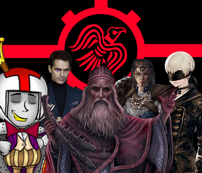
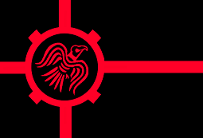
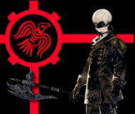
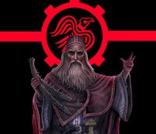
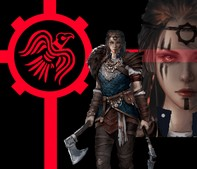
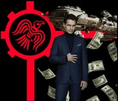

| SEEN | |
|---|---|
 | |
| Entité | Coalition |
| Origine | Entropie (G17), Secteur 2 |
| Orientation politique | Résistance contre l'Entropie, Lutte contre les synthétiques |
| Membres | Bard, Dot makh tak, Erika, Oswald Bang, Mekteubé |
| Sympathisants | SOS 117, Lali |
| Opposants | Coa. Concordat Primosect., Lakshmî Kayal, Sélène, Nexus, Ogbunabali, Amédée Soudcoté, Hamilton |

Sommaire
Présentation
La Coalition SEEN fondée en galaxie 17, regroupait des commandants du secteur 2. Celle-ci avait pour but en apparence l'élimination des Commandants synthétiques, un subterfuge en fait destiné à couvrir leurs véritables opérations occultes. SEEN préparait en effet une action de resistance contre une entité indicible perçue dans les visions conjointes d'Oswald Band, de Bard et du Prophète Dot makh tak.
Histoire connue
Eveil et premiers contacts
Pour expliquer la naissance du groupe, il faut remonter aux premiers frémissements géo-politiques post-éveil : en effet, les commandants de SEEN étaient tous originaires du secteur 2 de la galaxie 17.
L'entraide dans ce secteur créa de profonds liens entre chacune des civilisations présentes, le partage technologique étant de mise ainsi que le partage territorial des divers systèmes. Ainsi des commandants cohabitaient dans le même système tous en aillant établi des règles diplomatiques entre eux afin garantir le vivre-ensemble dans l'intelligence et l'harmonie. Quelques entités tentèrent de créer du chaos lors de l'établissement de ce grand œuvre, notamment le droïde N-187-B qui refusa de respecter les règles de répartition en spoliant le Commandant Bard du système 10, obligeant le Norrois a prendre les armes contre le synthétique et son allié le Princeps Oyama Ik Mukden. D'aucun disent que les origines de l'hostilité anti-robots dont fut accusée SEEN trouve son origine dans cet ébauche de conflit, mais les archives douteuses ne permettent pas de vérifier cette hypothèse.
Toutefois il fut évident de constater qu'à l'ouverture sectorielle, l'unité de ce Secteur n'était plus à prouver.
La bataille de Ryzel et le paravent de la croisade anti-cyber
Alors que les relations allaient bon train durant l'ère post-Eveil, un curieux message de détresse fut envoyé par le commandant Oswald Bang de la planète Ryzel. Celui ci, après une erreur bénigne, fut emprisonné par son propre consortium et torture par le nouveau visage de la compagnie ryzelienne, Ernesto. Sans attendre, les commandants du Secteur 2 montèrent une opération de sauvetage afin de libérer Oswald du joug du conglomérat. La bataille entra dans la légende fondatrice du 2 et termina de sceller les alliances entre les commandants en place dans le secteur. Toutefois, mûs par les prophéties du Prophète Dot makh tak et par les nébuleux projets de Bard le Norrois, les prémices de SEEN commencèrent à se dessiner lorsqu'Oswald entra en contact durant sa torture avec une entité cosmique indicible de mort et de corruption.
La réalité de SEEN était en vérité bien loin des belligérances métaphysiques d'existence synthétique dont qui la condamnèrent par la suite : après les révélations du prophète et suite à l'épisode tragique de la bataille de Ryzel, les commandants du Secteur 2 accusèrent la nécessité de former une coalition afin de contrer l'entité sans nom qui avait tenté de prendre possession d'Oswald Bang durant sa capture. Dot makh tak et Bard ressentant précisément la menace imminente de cette chose, le besoin de regrouper les forces vives du Secteur 2 se fit évident, et le besoin pour chacun de croître en puissance également.
Ouverture Sectorielle et Régence de Capitale
Fort de leur victoire sur Ryzel et détenteurs d'une richesse et d'une puissance territoriale conséquente, quelques noms de SEEN émergèrent de la masse en se faisant connaitre par des faits d'armes reconnus, notamment via la prise de la Capitale Galactique et ce malgré une ouverture sur le tard du Secteur 2, alors que les commandants du 1 avaient déjà entamé leur long voyage vers le Secteur 0. C'est comme cela que le guildien Mekteubé revendiqua la première gouvernance de la galaxie d'Entropie. Héritier de l'entente du Secteur 2, son projet galactique était favorable à la paix entre secteurs, et il n'y eu aucune guerre notable déclarée jusqu'à l'arrivée d'une espèce insectoïde réduisant à néant les mondes du Secteur 0 et portant le nom de Nuage Zwiie.
Unis devant la menace qui vidait les mondes de ses ressources, le secteur 1 et 2 décidèrent de s'unir afin d'éradiquer la menace. La guerre dura plusieurs cycles dans un silence diplomatique des plus singuliers, l'ennemi étant dénué de langage connu , mais suffisamment doué d'intelligence pour initier des tactiques de guérilla, attaquant et se repliant dans le nuage des forces brigandes pour mieux resurgir afin d'assouvir ses sinistres desseins. Malgré tout, l'entente co-sectorielle parvint à faire reculer la menace Zwiie, jusqu'à retrancher celle-ci dans un système mort, mettant ironiquement fin au nuage en utilisant les méthodes que lui-même avait répandu dans le Secteur 0.
Changement de Régence et Création de SEEN
Alors que la réjouissance de la victoire était de mise, la galaxie fût perturbée une fois de plus par les appétits du détenteur de la Capitale. Mekteubé, qui avait engagé des sommes importantes pour soutenir le conflit, estima juste de se voir remboursé par le Secteur 1, sous prétexte que le Nuage était originaire du 1. Il demanda alors des sommes colossales en réparation des préjudices subis.
La guerre, à peine terminée, avait déjà trouvé un nouveau chemin à frayer dans le cœur des puissants de la Galaxie. Voyant la folie du Mek mener Entropie dans les flammes perpétuelles, Bard, assisté de Gertrude l'IA personnelle de Mekteubé, entreprit de détrôner le Mek afin d'éviter un conflit intersectoriel stérile. C'est comme cela, que Gertrude prit le contrôle de l'empire Mek tandis que Bard revendiqua par les armes la capitale. Gertrude enferma son créateur dans une sphère de stase spatio-temporelle dont il n'avait pour l'heure aucun espoir de sortie.
Plusieurs cycles s'écoulèrent sous la régence raisonnée de Bard, celui-ci distribuant ressources et rédigeant des décrets gouvernementaux afin de soumettre son grand projet pour la Galaxie. Toutefois, un Commandant ne voyait pas la captivité de Mekteubé d'un bon oeil, ayant contemplé à travers le voile de ses visions que le Mek était destiné à accomplir un destin que sa captivité avait interrompu en pleine ascension. Motivé par le Kal'Haal sacré lui servant de guide, le Prophète Dot makh tak attaqua la capitale afin de libérer le petit Mek de sa prison. Bard ayant prévu cette attaque, ne réagit pas au delà de la simple récupération de la capitale, estimant que la captivité du Mek était effectivement une sentence trop lourde pour celui qui combattit avec les opposants au Nuage Zwiie. Sachant que le Mek était plus utile libre que captif, Bard entreprit de reprendre contact avec le fugitif, afin de lui soumettre une proposition qu'il n'allait pas pouvoir refuser : connaissant le penchant de Mekteubé pour la bagarre et poussé par les violentes dynamiques qui germaient de part et d'autres d'Entropie, Bard avait compris que pour unir les peuples, il devait pointer du doigt un ennemi fédérateur comme celui qu'avait été le Nuage Zwiie à son époque.
Après concertation , une déclaration de conflit ouvert envers les machines fut donc prononcée par chacun des membres, motivées par des motifs aussi divers que convergents : Mekteubé en voulait à son IA qui n'avait pas hésité à l enfermer dans une stase, le Prophète Dot makh tak fort de ses révélations estima que l'Entropie ne saurait être arrêté tant que la synthèse côtoierait la chair. Bard tenta non sans mal de temperer organiques et synthétiques en un status quo mais le souvenir de N-187-B et les récentes opérations hostiles de l'Intelligence d'origine inconnue répondant au nom de Sélène n'aidèrent pas à rétablir l'accalmie. Entropie s'enroulant d'elle-même dans le maelström idéologique de SEEN, les discours anti-machine du Prophète Dot makh tak se répandirent massivement dans la Galaxie. Trop conscient qu'une Assemblée à peine sortie d'Eveil ne serait que trop peu à même d'envisager la teneur d'une telle menace, il fallut dénoncer plus avant les sibyllines menaces de de l'Intelligence Artificielle Nexus qui annonçaient un "changement de paradygme", menaçant en sous texte l'avenir d'Entropie toute entière. Ainsi démarra la croisade anti-synthétiques qui amena au procès de conscience de certains commandants cyber.
L'évaluation de ces êtres se fit par un questionnaire rigoureux que le Prophète Dot makh tak avait consciencieusement mis en place. Parmi les commandant soumis a la croisade anti-cyber, le commandant Ogbunabali participa à ladite évaluation. (cf. Interventions majeures en Assemblée) Ce fût ainsi que l'inquisition contre les IA commença, menant dans la foulée à la création de SEEN coalition oscillant entre parti politique et 'think-tank' posant la reflexion sur l'existence et la conscience de la vie synthétique. De là, le Prophète Dot makh tak mit en place des analyses afin de déterminer la nature profonde de ces êtres, tandis que Bard menait des recherches afin de comprendre comment stopper l'indicible qui pour l'heure restait contenu sur la planète Firouzabad.
Emblème : Symbole et signification
 |
|---|
| Le Corbeau Hugin, symbole de SEEN |

Le Corbeau, signe d'appartenance à SEEN, est à l'origine le symbole du peuple norrois, Bard étant l'un des co-initiateurq de la coalition.
En effet, dans les croyances nordes, le dieu Odin possède deux corbeaux, Munin et Hugin, qui parcourent le monde et rapportent à leur maître ce qu'ils voient et entendent.
Les bandes rouges traçent horizontalement et verticalement des lignes continuant au delà de la bannière, ce qui indique l'intention de porter le message du SEEN dans les plus lointains confins de la Galaxie (la bande horizontale démarrant de la gauche vers la droite, symbolisant l'avancée vers le futur). La bande verticale descendante indique un fort ancrage des racines dans l'idéologie SEEN : ses membres sont issus de cultures au passé riche et pour certains d'entre eux communs, ce qui les a notamment amené à porter les couleurs du corbeau. Cette ligne part vers le haut, marquant l'ambition et le désir de toucher le ciel, et par extension les étoiles et leur population. Les bandes diagonales brisées en leur base indiquent que l'objectif de SEEN est focalisé, et que celui ci ne se perdra pas dans les chaos d'Entropie. La couleur rouge représente le sang des organiques, ainsi que les flammes de la guerre. Le fond noir représente le vide spatial d'Entropie ainsi que la plaine obscurantiste que représente métaphoriquement la Galaxie. Ainsi, survolée par un corbeau de sang organique prompt a porter les flammes de la guerre pour transmettre son message, la lumière de SEEN viendra guider les âmes égarées.
Détermination, Conviction, Héritage : tels pourraient être en condensé les maîtres mots de SEEN.
Membres de SEEN
 |
|---|
| Bard |

 |
|---|
| Dot makh tak |

 |
|---|
| Erika |


|
|---|
| Mekteubé |
 |
|---|
| Oswald Bang |

.
Interventions majeures en Assemblée
Processus d'évaluation "Ogbunabali": https://www.apocalypsis.org/archives/gamma2/galaxie17/forums/2160/topics/15501/page1
Requiem pour un Mek : https://www.apocalypsis.org/archives/gamma2/galaxie17/forums/2160/topics/15447/page1
Sélène, vous ne méritez rien dans cet Univers : https://www.apocalypsis.org/archives/gamma2/galaxie17/forums/2160/topics/15494/page1
La bataille de Ryzel : https://www.apocalypsis.org/assemblee/viewtopic?c_topic=15336&c_forum_page=3